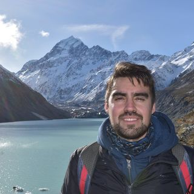

Alberto Luna Vial

Click the image to access my Instagram profile.
Personal Statement
I am a 36-year-old Chilean man living in New Zealand with an open Work Visa and I am looking for my next role due to Christchurch relocation. Back in my country, I worked as a qualified occupational health and safety engineer in industries as construction, manufacturing, and industrial maintenance.
Working in New Zealand for the last four years, I gained experience in construction and factory processes. I worked as a light panel duct fabricator using different hand tools, press, and CNC router. Also, I worked as a press shop operator in an industrial kitchen factory where I cut, drilled, flow drilled and tap metal pieces using machinery. Additionally, I acquired experience in plumbing and construction processes working for a Tourism company building campervans. I installed water connections, pump and sink. I have experience manipulating electric and manual tools. We worked in a small team and because of that we learned different skills to accomplish our goals, which gave me the opportunity to work as part of a team.
I am a hard-working responsible person and I am always keen to learn new skills.
Work History
Panelform
Position: Press Machine Operator/Joiner
Year: 2023-2024
- Understanding drawings and specifications to determine job, material and equipment requirements.
- Cutting material using hand and power tools, guillotines and drills, and CNC router.
- Shaping and sanding doors and panels of wood to be press.
- Check color, dimensions, number of order and quality of prducts before press it.
- Quality control of pieces following number of order.
Smooth-Air
Position: CNC Operator
Year: 2020-2022
- Understanding drawings and specifications to determine job, material and equipment requirements.
- Cutting material using hand and power tools, guillotines and drills, and CNC router.
- Shaping and forming cut material into products using folding and bending machines, rollers, presses and hand tools.
- Marks out, shapes, forms and joins sheet material and other materials to make products and components.
Moffat
Position: Press Machine Operator
Year: 2020
- Read and interpreting drawings and orders.
- Cut metal pipe and tube with bandsaw.
- Drill, flow drill and tap pipe and tube with pedestal drilling.
- Debur material with deburring machine and belt sander.
- Bend cooper pipe.
Personal skills
- Team player – Highly adaptable to work with others, who embraces teamwork and multicultural environment.
- Self-motivated – I am always looking forward to challenging myself and learning different things to gain experience that can be used in the future.
- Communication – I have gained valuable experience in interacting with people, being capable of dealing with different personalities.
Portafolio
If you want to access to my "Portafolio" of DesafioLatam click here